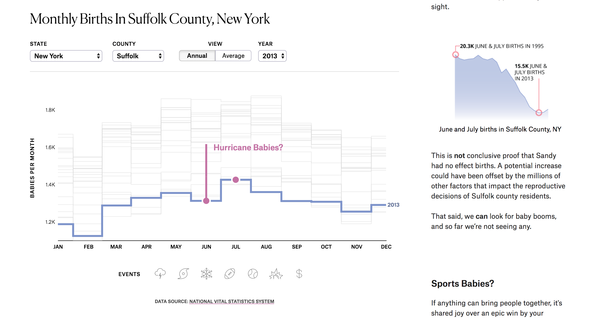
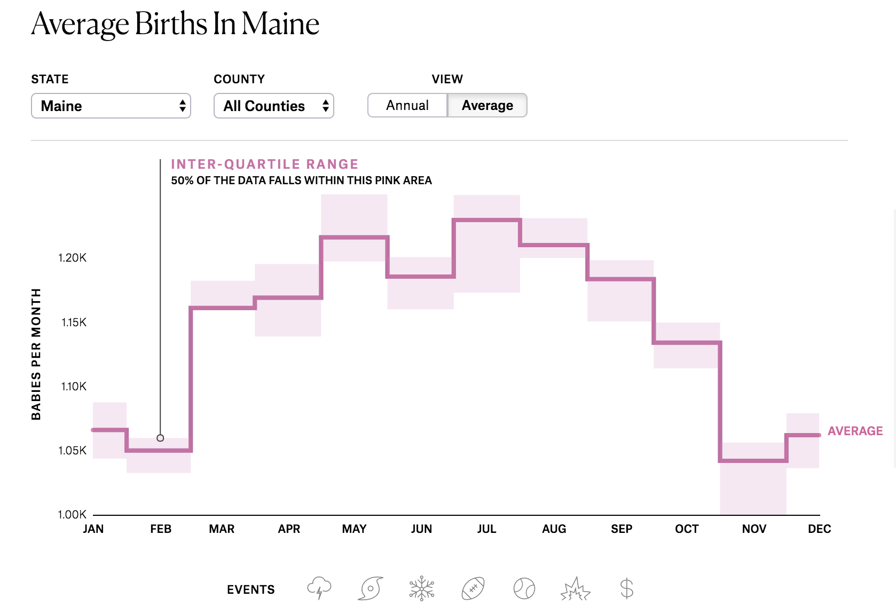
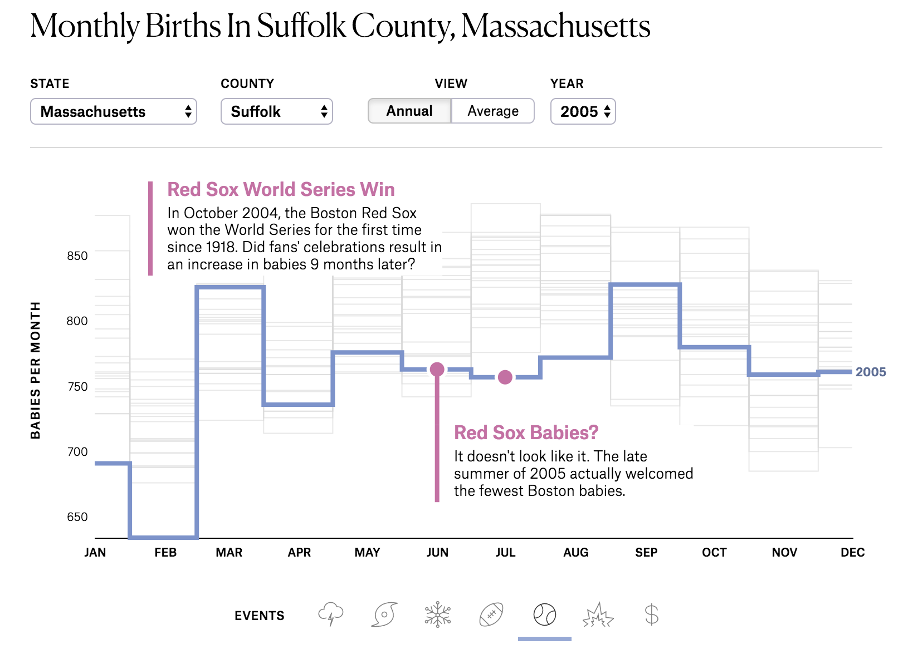
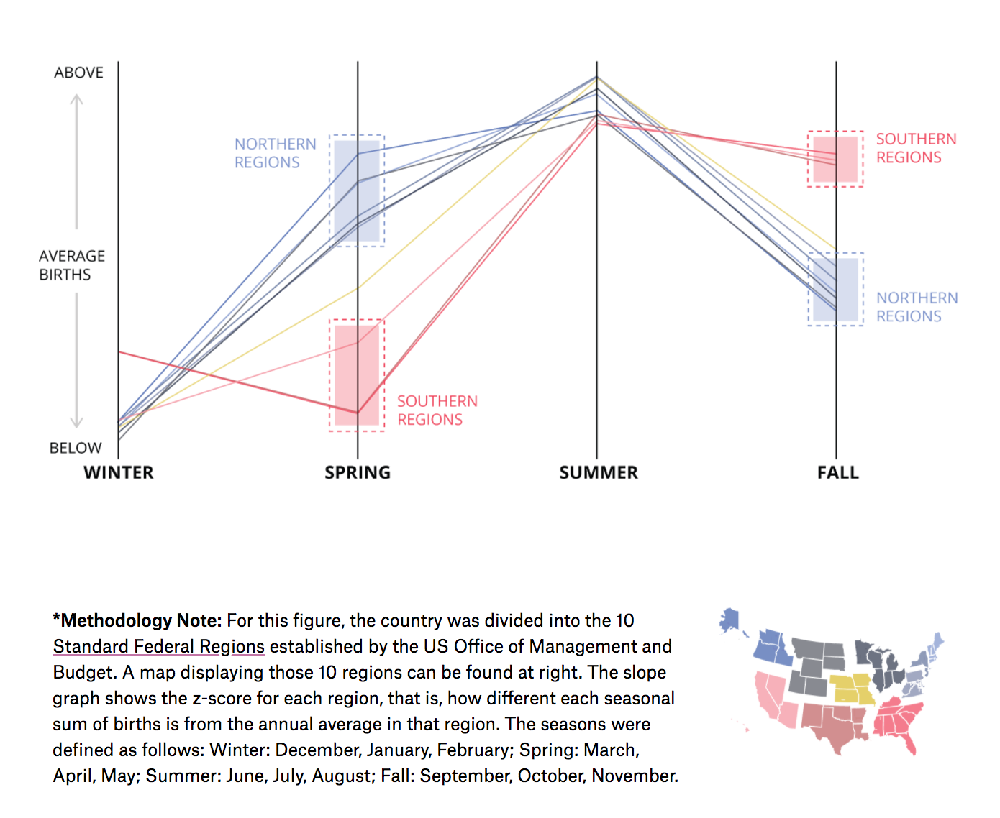

The Timing of Baby Making
May 24, 2017
The Premise
Every time there is some sort of large scale storm (e.g., blizzard or hurricane) or big sports win, I seem to hear everyone chatting about how there will be a baby boom in that area 9 months later. Driven by the curiosity to see if there was any data to back up these claims, I decided to investigate a little further. This project tells the story of my findings while allowing readers to play with the interactive graphic to answer their own questions.
My Contributions
- Data Collection
- Data Analysis
- Project Design
- Majority of Front-End Development (HTML, CSS, and D3)
- Story Writing
Collaborators
This project was done in collaboration with the fine folks at The Pudding. Specifically, Matt Daniels who helped me shape the story, make this piece mobile friendly, and fix some of my beginner-coding bugs, and Russell Goldenberg who helped optimize my code.
Screenshots

Figure 1: This interactive graphic is driven by the reader’s scrolling. As you scroll and read the story, the figure updates with you. If you don’t want to be told where to look, you can go rogue and explore within the graphic at any time.
